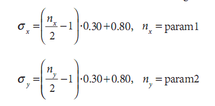
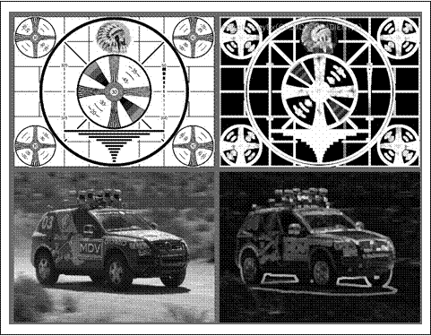

图像处理
综述
到这里，我们已经掌握了关于图像处理的所有基础知识。我们了解了OpenCV库的结构，也知道了通常用来表示图像的基本数据结构。通过熟悉HighGUI接口，我们可以运行程序并将结果显示在屏幕上。掌握了这些用来控制图像结构的基本方法，我们就可以学习更复杂的图像处理方法了。
现在，我们来继续学习高级的处理方法，即把图像以“图像”的方式来处理，而不是由颜色值（或灰度值）组成的数组。在提到“图像处理”时，它的意思是：使用图像结构中所定义的高层处理方法来完成特定任务，这些任务是图形和视觉范畴的任务。
平滑处理
“平滑处理”也称“模糊处理”（blurring），是一项简单且使用频率很高的图像处理方法。平滑处理的用途有很多，但最常见的是用来减少图像上的噪声或者失真。降低图像分辨率时，平滑处理是很重要的（在本章的“图像金字塔”部分会详细介绍这一点）。
目前OpenCV可以提供五种不同的平滑操作方法，所有操作都由cvSmooth函数实现，该函数可以将用户所期望的平滑方式作为参数。
void cvSmooth(
const CvArr* src,
CvArr* dst,
int smoothtype = CV_GAUSSIAN,
int param1 = 3,
int param2 = 0,
double param3 = 0,
double param4 = 0
);
src和dst分别是平滑操作的输入图像和结果，cvSmooth()函数包含4个参数，param1，param2，param3和param4。这些参数的含义取决于smoothtype的值，这些值可能是表5.1中列出的任何一个。（请注意，有些操作不支持in place方式的输入。in place方式意味着输
入图像与结果图像是同一个图像。）
表5-1：平滑操作的各种类型
平滑类型 |
名称 |
支持 |
No |
输入类型 |
输出类型 |
简要介绍 |
CV_BLUR |
简单模糊 |
是 |
1, 3 |
8u, 32f |
8u, 32f |
对每个像素param1×param2邻域求和，并做缩放1/(param1 param2) |
CV_BLUR_NO_SCALE |
简单无缩放变换的模糊 |
否 |
1 |
8u |
16s(占8u的资源)或32f(占32f的资源大小) |
对每个像素的param1×param2邻域求和 |
CV_MEDIAN |
中值模糊 |
否 |
1,3 |
8u |
8u |
对图像进行核大小为parma1×param2的中值滤波 |
CV_GAUSSIAN |
高斯模糊 |
是 |
1,3 |
8u, 32f |
8u(占8u的资源)或32f(占32f的资源) |
对图像进行核大小为param1×param2的高斯卷积 |
CV_BILATERAL |
双边滤波 |
否 |
1,3 |
8u |
8u |
应用双线性3×3滤波，颜色sigma=param1，空间sigma=param2 |
图5.1CV_BLUR所例举的simple blur是最简单的一项操作。输出图像的每一个像素是窗口中输入图像对应像素的简单平均值。simple blur支持1~4个图像通道，可以处理8位图像或者32位的浮点图像。
图5-1：简单图像平滑处理：左边为输入图像，右边为结果图像
图5-1：简单图像平滑处理：左边为输入图像，右边为结果图像
不是所有的模糊操作的输入和结果图像类型都相同，CV_BLUR_NO_SCALE(不缩放比例而进行模糊处理)与simple blur本质上是相同的，但并没有计算其平均值的操作。因此，输入图像和结果图像必须有不同的数值精度，才能保证模糊操作不会导致错误溢出。不缩放比例的simple blur支持8位的输入图像，结果图像的数据类型必须是IPL_DEPTH_16S(CV_16S)或IPL_DEPTH_32S(CV_32S)。同样的操作也可以在32位浮点图像上进行，结果图像也应该是32位浮点类型。简单无缩放变换的模糊不支持in place方式：输入图像与结果图像必须不同。（在8位和16位情况下，很明显不能用in place方式；用32位图像时，也保持这一规定。）用户选择不缩放比例的模糊操作是因为其比缩放比例的模糊操作要快一些。
中值滤波器（CV_MEDIAN）[Bardyn84]将中心要素的正方形邻域内的每个像素值用中间像素值（不是平均像素值）替换，它可以用来处理单个通道、三个通道或者四个通道8位的图像，但不可以in place操作。中值滤波的结果见图5-2。基于平均算法的simple blur对噪声图像特别是有大的孤立点（有时被称为“镜头噪声”）的图像非常敏感，即使有极少数量点存在较大差异也会导致平均值的明显波动，因此中值滤波可以通过选择中间值避免这些点的影响。
5-2，用中值滤波进行的图像模糊处理
下一个平滑滤波器是Gaussian filter(CV_GAUSSIAN)，虽然它不是最快的，但它是最有用的滤波器。高斯滤波用卷积核与输入图像的每个点进行卷积，最终计算结果之和作为输出图像的像素值。
对于高斯模糊（图5-3），前两个参数代表滤波器窗口的宽度和高度，可选择的第三个参数代表卷积核的sigma值（是最大宽度的四分之一）。如果第？个参数未指定，系统将会根据窗口尺寸通过下面的方程来自动确定高斯核的各个参数。

参数1：滤波器宽度
参数2：滤波器高度
图5-3：对一维像素数组进行高斯模糊
如果用户希望高斯核不对称，那么可以引入第四个参数。这样，第三个和第四个参数分别为水平方向和垂直方向的sigma值。
如果第三个和第四个参数已经给出，但是前两个参数被设为0，那么窗口的尺寸会根据sigma值自动确定。
高斯滤波的OpenCV的实现还为几个常见的核提供了更高的性能优化。具有标准sigma值的3×3,5×5和7× 7比其他核具有更优的性能。高斯模糊支持单个通道或者三个通道的8位或32位的浮点格式图像，可以进行in place方式操作。高斯模糊的效果见图5-4。
图5-4:高斯模糊
OpenCV支持的第五个也是最后一个平滑操作被称作双边滤波（bilateral filtering）[Tomasi98]，举例见图5-5。双边滤波是“边缘保留滤波”的图像分析方法中的一种。将它与高斯平滑对比后会更容易理解。进行高斯滤波的????是真实在空间内的像素是缓慢变化的，因此临近点的像素变化不会太明显。但是随机??个点就可能形成很大的像素差（也就是说空间噪声点不是相互联系的）。正是??这一点，高斯滤波在保留信号的条件下减少噪声。遗憾的是，这种方法在接近??处就无效了，在那儿你不希望像素与相邻像素相关。因此，高斯滤波会磨平边??。而双边滤波能够提供一种不会将边缘的平滑掉的方法，但作为代价，需要更多??时间。
图5-5:双边滤波结果
与高斯滤波类似，双边滤波会依据每个像素及其邻域
构造一个加权平均值，加权计算包括两个部分，其中第一部分加权方式与高斯平滑中的相同，第二部分也属于高斯加权，但不是基于中心像素点与其他像素点的空间距离之上的加权，而是基于其他像素与中心像素的亮度差值的加权。可以将双边滤波视为高斯平滑，对相似的像素赋予较高的权重，不相似的像素赋予较小的权重。这种滤波的典型??就是使处理过的图像看上去像是一幅源图的水彩画，可用于图像的分割。
双边滤波含有两个参数。第一个参数代表空域中使用的高斯核的宽度，和高斯滤波的sigma参数类似。第二个参数代表颜色域内高斯核的宽度。第二个参数越大，表明待滤波的强度（或颜色）范围越大（因此不连续的程度越高，以便保留）。
图像形态学
OpenCV为进行图像的形态学变换[Serra83]提供了快速、方便的函数。基本的形态转换是膨胀与腐蚀，它们能实现多种功能：例如消除噪声、分割出独立的图像元素以及在图像中连接相邻的元素。形态学也常被用于寻找图像中的明显的极大值区域或极小值区域以及求出图像的梯度。
膨胀和腐蚀
膨胀是指将一些图像（或图像中的一部分区域，称之为A）与核（称之为B）进行卷积。核可以是任何的形状或大小，它拥有一个单独定义出来的参考点（anchor point）。多数情况下，核是一个小的中间带有参考点的实心正方形或圆盘。核可以视为模板或掩码，膨胀是求局部最大值的操作。核B与图像卷积，即计算核B覆盖的区域的像素点最大值，并把这个最大值赋值给参考点指定的像素。这样就会使图像中的高亮区域逐渐增长，如图5-6所示。这样的增长就是“膨胀操作”的初衷。
图5-6：形态学膨胀：在核B下取最大像素值
腐蚀是膨胀的反操作。腐蚀操作要计算核区域像素的最小值。腐蚀可以通过下面的算法生成一个新的图像：当核B与图像卷积时，计算被B覆盖区域的最小像素值，并把这个值放到参考点上。腐蚀后的图像如图5-7所示。
图5-7：形态腐蚀：在核B之下取最小像素值
一般来说，膨胀扩展了区域A，而腐蚀缩小了区域A。此
外，膨胀可以填补凹洞，腐蚀能够消除细的凸起。当然，准确的效果将取决于核，但当使用凸核时前面的说法一般是对的。
在OpenCV，我们利用cvErode()和cvDilate()函数实现上述变换。
void cvErode(
IplImage* src,
IplImage* dst,
IplConvKernel* B = NULL,
int iterations = 1
);
void cvDilate(
IplImage* src,
IplImage* dst,
IplConvKernel* B = NULL,
int iterations = 1
);
cvErode()和cvDilate()都有源图像和目标图像参数，它们都支持“in-place”操作（源图像和目标图像是同一个图像）。第三个参数是核，默认值为NULL。当为空时，所使用的是参考点位于中心的3×3核（我们将简单讨论如何构造核）。最后，第四个参数是迭代的次数。如果未将它设置为默认值（1），将在一次函数的调用中执行多次操作。腐蚀操作的结果如图5-8所示，膨胀操作的结果如图5-9所示。腐蚀操作通常是用来消除图像中“斑点”噪声。腐蚀可以将斑点腐蚀掉，且能确保图像内的较大区域依然存在。在试图找到连通分支（即具有相似颜色或强度的像素点的大块的互相分离的区域）时通常使用膨胀操作。因为在大多数情况下一个大区域可能被噪声、阴影等类似的东西分割成多个部分，而一次轻微的膨胀又将使这些部分“融合”在一起。
综上所述：当OpenCV执行cvErode()函数时，将某点p的像素值设为与p对应的核覆盖下所有点中的最小值，同样的，对于执行膨胀操作时，将取最小值换为取最大值：
大家可能会想，既然之前的算法描述已经能解释清楚，为什么还需要引入一个复杂的公式呢？实际上，有些读者喜欢这样的公式，更重要的是，公式可以阐明一些定性描述表达不清楚的一般性问题。我们能够注意到，如果图像不是二值的，那么膨胀和腐蚀操作起到的作用不是很明显。再看一看图5-8和图5-9，分别展示了对两个图像进行腐蚀和膨胀操作的效果。
图5-8：腐蚀的结果或者“最小化”操作，亮的区域被隔离并且缩小
图5-9：膨胀的“最大化”操作：亮的区域得到了扩展和连接
自定义核
你不必局限于选择3×3方形的核。可以创建自定义的IplConvKernel核（即我们之前提到的“核B”）。这样的核由cvCreateStructuringElementEx()函数创建，由cvReleaseStructuringElement()函数释放。
IplConvKernel* cvCreateStructuringElementEx(
int cols,
int rows,
int anchor_x,
int anchor_y,
int shape,
int* values=NULL
);
void cvReleaseStructuringElement(IplConvKernel** element);
形态核与卷积核不同，不需要任何的数值填充核。当核在图像上移动时，核的元素只需简单标明应该在哪个范围里计算最大值或最小值。参考点指定核与源图像的位置关系，同时也锁定了计算结果在目标图像中的位置。当构造核时，行与列确定了所构造的矩形大小（矩形内含有结构元素），下两个参数anchor_x和anchor_y，是核的封闭矩形内参考点的横纵坐标(x, y)。第五个参数，形状shape可以取表5-2中所列的值。如果使用CV_SHAPE_CUSTOM，那么使用整数向量value在封闭矩形内定义核的形状。使用光栅扫描法读取向量，使每个元素代表封闭矩形中的不同像素。所有非零值指定在核中对应的各个像素点。如果值为空，通常会构造一个所有值为非空的矩形核。
表5-2：IplConvKernel的形状取值
形状值 |
含义 |
CV_SHAPE_RECT |
核是矩形 |
CV_SHAPE_CROSS |
核是十字交叉形 |
CV_SHAPE_ELLIPSE |
核是椭圆形 |
CV_SHAPE_CUSTOM |
核是用户自定义的值 |
更通用的形态学
在处理布尔图像和图像掩码时，基本的腐蚀和膨胀操作通常是足够的。然而，在处理灰度或彩色图像时，往往需要一些额外的操作。更通用的cvMorphologyEx()函数提供了更多有用的操作。
void cvMorphologyEx(
const CvArr* src,
CvArr* dst,
CvArr* temp,
IplConvKernel* element,
int operation,
int iterations = 1
);
除了以往操作中使用过的参数：如src, dst, element和iterations外，cvMorphologyEx()函数增加了两个新的参数。第一个是temp数组，它在一些操作可能会用到（参见表5-3）。使用该数组时，它应与源图像同样大小。第二个参数operation很有趣，它指定形态学操作的方法。
表5-3：cvMorphologyEx()操作选项
操作名称 |
形态学 |
是否需要临时图像 |
CV_MOP_OPEN |
开运算 |
否 |
CV_MOP_CLOSE |
闭运算 |
否 |
CV_MOP_GRADIENT |
形态梯度 |
总是 |
CV_MOP_TOPHOT |
“礼帽” |
in-place情况下（src=dst）需要 |
CV_MOP_BLACKHAT |
“黑帽” |
in-place情况下（src=dst）需要 |
开运算与闭运算
表5-3中的前两个操作开运算和闭运算包含腐蚀和膨胀操作。在开运算的情况下，我们首先将其腐蚀然后再膨胀（图5-10）。开运算通常可以用来统计二值图像中的区域数。若已将显微镜载玻片上观察到的细胞图像作了阈值化处理，可以使用开运算将相邻的细胞分离开来，然后再计算图像中的区域（细胞）数目。在闭
图5-10：形态的开运算（向上的孤立点被消除）
运算的情况下，我们首先将其膨胀然后再腐蚀（图5-12）。在大多数好的连通区域分析算法中，都会用到闭运算来去除噪声引起区域。对于连通区域分析，通常先采用腐蚀或闭运算来消除纯粹由噪声引起的部分，然后用开运算来连接邻近的区域。（注意，虽然使用开运算或闭运算的结果与使用腐蚀和膨胀的结果类似，但这两个新的操作能更精确地保存源图像连接的区域。）
图5-11，形态开运算的结果(去除小的明亮区域，并且剩余的明亮区域被隔绝，但其大小不变)
图5-12：形态闭运算的操作（消除低亮度值的孤立点）
开运算和闭运算操作几乎都是“保留区域”形式的：最显著的效果是，闭运算消除了低于其邻近点的孤立点，而开运算是消除高于其邻近点的孤立点。开运算的结果如图5-11所示，闭运算的结果如图5-13所示。
图5-13:形态学闭运算的结果(亮的区域连在一起，但他们基本的大小不变)
开运算和闭运算操作几乎都是“面积保持”形式的：最显著的效果是，闭运算消除了低于其邻近点的孤立点，而开运算是消除高于其邻近点的孤立点。开运算的结果如图5-11所示，闭运算的结果如图5-13所示。
关于开运算和闭运算，最后一点需要说明的是iterations参数的意思。您可能会认为闭操作执行两次，相当于执行膨胀-腐蚀-膨胀-腐蚀。但事实上，这并不是必要的。真正需要的（并且所能得到的）是膨胀-膨胀-腐蚀-腐蚀这样的过程。通过这种方式，不仅是单一的孤立点会消失，而且邻近的孤离点群也会消失。
形态学梯度
下一个可用的操作是形态学梯度。在这里我们先给出其公式，然后再解释公式的含义：
gradient(src) = dilate(src) – erode(src)
对二值图像进行这一操作可以将团块（blob）的边缘突出出来。图5-14解释了这一操作，在测试图像上进行操作的效果如图5-15所示。

图5-14：形态梯度被应用于灰度图（正如所料，在灰度值变化最剧烈的区域得到的结果数值最大）
观察对灰度图像的处理结果，可以获知形态学梯度操作能描述图像亮度变化的剧烈程度；这就是为什么把其称为“形态学梯度”的原因。当我们想突出高亮区域的外围时，通常可使用形态学梯度，这样我们可以把高亮的看成一个整体（或物体的一整部分）。因为从原区域的膨胀中减去了原区域的收缩，所以留下了完整的外围边缘。这与计算梯度有所不同，梯度一般不能获得物体的外围边缘。
礼帽和黑帽
最后两个操作被称为礼帽（Top Hat）和黑帽变换（Black Hat）[Meyer78]。这些操作分别用于分离比邻近的点亮或暗的一些斑块。当试图孤立的部分相对于其邻近的部分有亮度变化时，就可以使用这些方法。例如常用与处理有机组织或细胞的显微镜图像。这是两个操作都是基本的操作组合，定义如下：
TopHat(src)=src-open(src)
BlackHat(src)=close(src)-src
可以看出，礼帽操作从A中减去了A的开运算。开运算带来的结果是放大裂缝或局部低亮度区域，因此，从A中减去open(A)可以突出比A周围的区域更明亮的区域，并跟核的大小相关（参见图5-16）；相反地，黑帽操
作突出比A的周围的区域黑暗的区域（图5-17）。在本章讨论的所有形态操作的结果均可参见图5-18。

图5-17：形态学“黑帽”操作的效果（黑色“洞”被分割出）
图5-18：所有形态学算子操作的效果汇总
漫水填充算法
漫水填充（Flood Fill）[Heckbert00; Shaw04; Vandevenne04]是一个非常有用的功能，它经常被用来标记或分离图像的一部分以便对其进行进一步处理或分析。漫水填充也可以用来从输入图像获取掩码区域，掩码会加速处理过程，或只处理掩码指定的像素点。cvFloodFill函数本身也包含一个可选的掩码参数，用来进一步控制哪些区域将被填充颜色（例如当对同一图像进行多次填充时）。
在OpenCV里，漫水填充是填充算法中最通用的方法，
也许你看到这里已经将其与典型的计算机绘图程序联系起来。对于两种程序来说，都必须在图像上选择一个种子点，然后把邻近区域所有相似点填充上同样的颜色，不同的是不一定将所有的邻近像素点都被染成同一颜色，漫水填充操作的结果总是某个连续的区域。当邻近像素点位于给定的范围（从loDiff到upDiff）内或在原始seedPoint像素值范围内时，cvFloodFill()函数将为这个点涂上颜色。可选参数mask也可以用来控制漫水法填充。该填充方法的函数原型如下所示：
void cvFloodFill(
IplImage* img,
CvPoint seedPoint,
CvScalar newVal,
CvScalar loDiff = cvScalarAll(0),
CvScalar upDiff = cvScalarAll(0),
CvConnectedComp* comp = NULL,
int flags = 4,
CvArr* mask = NULL
);
img参数代表输入图像，该图像可以是8位或浮点类型的单通道或三通道图像。漫水法填充从点seedPoint开始，newVal是像素点被染色的值。如果一个像素点的值不低于被染色的相邻点减去loDiff且不高于其加上upDiff，那么该像素点就会被染色。如果flags参数包含CV_FLOODFILL_FIXED_RANGE，这时每个像素点都将与种子点而不是相邻点相比较。如果comp不是NULL，那么该CvConnectedComp结构将被设置为被填充区域的统计属性。flags参数（下文会有简短论述）有些复杂，这些参数决定填充的连通性、相关性、是否只填充掩码区域及用来填充的值。我们第一个漫水填充例子见图5-19。
图5-19：漫水填充的效果（上方图像用灰色填充，下方图像用白色填充），从位于两个图像中心旁的黑色圆形区域开始填充；此处hiDiff与loDiff参数均设为7.0
这里mask参数所代表的掩码既可以作为cvFloodFill()函数的输入值（此时它控制可以被填充的区域），也可以作为cvFloodFill()函数的输出值（此时它指已经被填充
的区域）。如果mask非空，那么它必须是一个单通道、8位、像素宽度和高度均比源图像大两倍的图像（这是为了使内部运算更简单快速）。mask图像的像素（x+1, y+1）与源图像的像素（x, y）相对应。注意，cvFloodFill()不会覆盖mask的非0像素点，因此如果不希望mask阻碍填充操作时，将其中元素设为0。源图像img和掩码图像mask均可以用漫水填充来染色。
注意：如果漫水填充的掩码不为空，那么要用flags参数的中间比特值（第8~15位）来填充掩码图像（参考下文）。如果没有设置值flags中间比特值，则取默认值1。如果填充了掩码后显示出来是黑色，不要感到奇怪，因为所设置的值（如果flags的中间值没有被设置）为1，所以如果要显示它，必须需要放大这个掩码图像的数值。
下面讲一下flags参数。此参数包含三部分，因为它比较复杂。低8位部分（第0~7位）可以设为4或8，这个参数控制填充算法的连通性。如果设为4，填充算法只考虑当前像素水平方向和垂直方向的相邻点；如果设为8，除上述相邻点外，还会包含对角线方向的相邻点。高8位部分（第16~23位）可以设为CV_FLOODFILL_FIXED_RANGE（如果设置为这个值，则只有当某个相邻点与种子像素之间的差值在指定范围内才填充，否则考虑当前点与其相邻点）或者CV_FLOODFILL_MASK_ONLY（如果设置，函数不填充原始图像，而去填充掩码图像）。很明显，如果设为CV_FLOODFILL_MASK_ONLY，必须输入符合要求的掩码。flags的中间比特（第8~15位）的值指定填充掩码图像的值。但如果中间比特值为0，则掩码将用1填充。所有flags可以通过OR操作连接起来。例如，如果想用
8邻域填充，并填充固定像素值范围，是填充掩码而不是填充源图像，以及设填充值为47，那么输入的参数应该是：
flags = 8
| CV_FLOODFILL_MASK_ONLY
| CV_FLOODFILL_FIXED_RANGE
| (47<<8);
图5-20显示了对示例图像的填充操作结果。
图5-20：漫水填充的效果（上方图像用灰色填充，下方图像用白色填充），填充从位于两个图像中心旁的黑色圆形区域开始；此处指定颜色填充法是在固定范围内进行的，loDiff和upDiff的取值都是25.0
在这个填充中使用了CV_FLOODFILL_FIXED_RANGE并选择了较大的范围，结果图像的大部分区域被填充（从中心处开始填充）。注意，newVal, loDiff和upDiff都是CvScalar的类型，所以它们可以同时处理三个通道（可以通过CV_RGB()宏设置RGB三色值）。例如令lowDiff=CV_RGB(20, 30, 40)，则三种颜色的lowDiff分别设为红色值20，绿色值30，蓝色值40。
尺寸调整
我们经常会将某种尺寸的图像转换为其他尺寸的图像，如放大或者缩小图像。我们可以用cvResize()函数来放大或缩小图像。该函数可以将源图像精确转换为目标图像的尺寸。如果源图像中设置了ROI，那么cvResize()将会对ROI区域调整尺寸，以匹配目标图像，同样，如果目标图像中已设置ROI的值，那么cvResize()将会将源图像进行尺寸调整并填充到目标图像的ROI中。
void cvResize(
const CvArr* src,
CvArr* dst,
int interpolation = CV_INTER_LINEAR
);
最后一个参数指定插值方法，默认为线性插值法。可用的插值方法如表5-4所示。
表5-4：cvResize()插值方法
插值方法 |
含义 |
CV_INTER_NN |
最近邻插值 |
CV_INTER_LINEAR |
线性插值 |
CV_INTER_AREA |
区域插值 |
CV_INTER_CUBIC |
三次样条插值 |
一般情况下，我们期望源图像和重采样后的目标图像之间的映射尽可能地平滑。参数interpolation控制如何进行映射。当缩小图像时，目标图像的像素会映射为源
图像中的多个像素，这时需要进行插值。当放大图像时，目标图像上的像素可能无法在源图像中找到精确对应的像素，也需要进行插值。在任何一种情况下，都有z种计算像素值的方法。其中最简单的办法是将目标图像各点的像素值设为源图像中与其距离最近的点的像素值，这就是当interpolation设为CV_INTER_NN时用的算法。或者采用线性插值算法（CV_INTER_LINEAR），将根据源图像附近的4个（2×2范围）邻近像素的线性加权计算得出，权重由这4个像素到精确目标点的距离决定。我们也可以用新的像素点覆盖原来的像素点，然后求取覆盖区域的平均值，这种插值算法称为区域插值。最后一种选择是三次样条插值（CV_INTER_CUBIC）。首先对源图像附近的4×4个邻近像素进行三次样条拟合，然后将目标像素对应的三次样条值作为目标图像对应像素点的值。
图像金字塔
图像金字塔[Adelson84]被广泛用于各种视觉应用中。图像金字塔是一个图像集合，集合中所有的图像都源于同一个原始图像，而且是通过对原始图像连续降采样获得，直到达到某个中止条件才停止降采样。（当然，降为一个像素肯定是中止条件。）
有两种类型的图像金字塔常常出现在文献和应用中：高斯金字塔[Rosenfeld80]和拉普拉斯[Burt83]金字塔[Adelson84]。高斯金字塔用来向下降采样图像，而拉普拉斯金字塔（后面会简单讨论）则用来从
金字塔低层图像中向上采样重建一个图像。
要从金字塔第i层生成第i+1层（我们表示第i+1层为Gi+1），我们先要用高斯核对Gi进行卷积，然后删除所有偶数行和偶数列。当然，新得到的图像面积会变为源图像的四分之一。按上述过程对输入图像G0循环执行操作就可产生整个金字塔。OpenCV为我们提供了从金字塔中上一级图像生成下一级图像的方法：
void cvPyrDown(
IplImage* src,
IplImage* dst,
IplFilter filter = IPL_GAUSSIAN_5x5
);
目前，最后一个参数filter仅支持CV_GAUSSIAN_5x5(默认选项)。
同样，我们可以通过下面相似的函数（但不是降采样的逆操作！）将现有的图像在每个维度上都放大两倍：
void cvPyrUp(
IplImage* src,
IplImage* dst,
IplFilter filter = IPL_GAUSSIAN_5x5
);
在这种情况下，图像首先在每个维度上扩大为原来的两倍，新增的行（偶数行）以0填充。然后给指定的滤波器进行卷积（实际上是一个在每一维上都扩大为两倍的过滤器）去估计“丢失”像素的近似值。
我们之前注意到函数PyrUp()并不是函数PyrDown()的逆操作。之所以这样是因为PyrDown()是一个会丢失信息的函数。为了恢复原来（更高的分辨率）的图像，我
们需要获得由降采样操作丢失的信息。这些数据形成了拉普拉斯金字塔。下面是拉普拉斯金字塔的第i层的数学定义：
这里的UP()操作将原始图像中位置为(x, y)的像素映射到目标图像的(2x+1, 2y+1)位置；符号 代表卷积操作，g5×5是5×5高斯核。OpenCV提供的函数PyrUp()实现的功能就如Gi-UP(Gi+1)Ug5x5所定义。因此，我们可以使用OpenCV直接进行拉普拉斯运算：
高斯金字塔和拉普拉斯金字塔如图5-21所示，这也显示了从小图恢复原始图像这个逆过程。注意：拉普拉斯是就像在前面方程中和图表中揭示的那样，它可通过高斯进行近似。
图5-21：高斯金字塔及其逆形式——拉普拉斯金字塔
有许多操作广泛使用高斯金字塔和拉普拉斯金字塔，但
一个特别重要的应用就是利用金字塔实现图像分割（见图5-22）。图像分割需要先建立一个图像金字塔，然后再Gi的像素和Gi+1的像素直接依照对应关系，建立起“父-子”关系。通过这种方式，快速初始分割可以先在金字塔高层的低分辨率图像上完成，然后逐层对分割加以优化。
图5-22：金字塔分割的阈值threshold1设置为150，阈值threshold2设置为30；右边的图像只包含左边图像的一部分，因为用金字塔分割图像需要将图像进行n次降采样，其中n是要计算出的金字塔的层数（右图都是从源图像分割出的512x512大小的区域）
OpenCV的函数cvPyrSegmentation()实现了该算法（可参考B.Jaehne的论文[Jaehne95; Antonisse82]）：
void cvPyrSegmentation(
IplImage* src,
IplImage* dst,
CvMemStorage* storage,
CvSeq** comp,
int level,
double threshold1,
double threshold2
);
像以前介绍的一样，src和dst分别是源图像和目标图像，它们都必须是8位的，且具有相同的图像大小和通道的数量（1或3）。大家可能会想：“会产生什么样的
目标图像？”这个问题并不是没有道理。目标图像dst可作为执行算法时的所需的临时空间，并对分割结果可视化。如果观察此图像，可以看出每个分割出的区域都被涂为单一的颜色（分割区域中像素的颜色）。由于这个图像是执行算法时所需的临时计算空间，所以不能设为NULL；即使不想要分割结果，也必须提供一个图像。关于src和dst，需要特别注意一点：由于图像金字塔各层的长和宽都必须是整数，所以必须要求起始图像的长和宽都能够被2整除，并且能够被2整除的次数不少于金字塔总的层数。例如，对于4层金字塔的高度或宽度为80（2×2×2×5）是满足要求的，而为90时（2×3×3×5）就不符合要求了。
指针storage用来指向OpenCV的存储区。第8章将详细讨论此内容，但现在应该知道一点，以下命令可以分配
存储区域：
CvMemStorage* storage = cvCreateMemStorage();
comp参数用于存储分割结果更详细的信息——存储区里一序列相连的组成部分。具体工作机制将在第8章详细讲解。但为方便起见，这里简要介绍一下cvPyrSegmentation()有关的知识。
首先要强调的是，序列（Sequence）是某个特定类型的结构列表。给定一个序列，如果已知元素的类型及其在序列中的位置，便可以获得此序列中元素的个数以及这个元素。访问序列的方法如例5-1所示。
例5-1：对序列中的每个元素进行操作，此序列的元素是由cvPyrSegmentation()返回的连续区域。
void f(IplImage* src, IplImage* dst){
CvMemStorage* storage = cvCreateMemStorage(0);
CvSeq* comp = NULL;
PyrSegmentation(src, dst, storage, &comp, 4, 200, 50);
int n_comp = comp->total;
for(int i = 0; i<n_comp; i++){
CvConnectedComp* cc = (CvConnectedComp*) cvGetSeqElem(comp, i);
do_something_with(cc);
}
cvReleaseMemStorage(&storage);
}
此例有以下几点应该注意。首先，观察存储的分配情况：cvPyrSegmentation()函数从中为它要创建的连续区域申请内存。然后将指针类型设为CvSeq*，并被初始化为NULL，因为其当前值意味着无内容。我们将传递指向comp的指针给cvPyrSegmentation()函数，这样comp就可以设置为cvPyrSegmentation()创建序列的位置。
调用分割操作之后，通过成员变量total，就会知道序列中的元素个数。随后，我们可以使用通用的cvGetSeqElem()以获取comp的第i个元素；然而，由于cvGetSeqElem()是通用的，所以我们必须将返回的指针强制转化为适当的类型（这里是CvConnectedComp*类型）。
最后，我们需要知道连续区域是OpenCV中的基本结构类型之一。可以把它视为描述图像中“团块”（blob）的一种方法。它具有以下定义：
typedef struct CvConnectedComponent{
double area;
CvScalar value;
CvRect rect;
CvSeq* contour;
};
参数area是区域的面积。参数value是区域颜色的平均值，参数rect是一个区域的外接矩形（定义在父图像的坐标系中）。最后一个参数contour是一个指向另一个序列的指针。这个序列可以用来储存区域的边界，通常是点的序列（元素类型为CvPoint）。
在cvPyrSegmentation()函数中，没有设参数contour的值。因此，如果想要区域中的像素，就只能自己计算。当然得根据自己的想法来选择函数。通常希望获得一个二值掩码图像，连续区域由掩码中的非0元素指定。可以使用连续区域的rect作为掩码，然后使用cvFloodFill()来选择矩形内所需的像素。
阈值化
完成许多处理步骤之后，通常希望对图像中的像素做出最后的决策，或直接剔除一些低于或高于一定值的像素。在OpenCV中，函数cvThreshold()可以完成这些任务（见综述[Sezgin04]）。其基本的思想是，给定一个数组和一个阈值，然后根据数组中的每个元素的值是低于还是高于阈值而进行一些处理。
double cvThreshold(
CvArr* src,
CvArr* dst,
double threshold,
double max_value,
int threshold_type
);
如表5-5所示，每个阈值类型对应一个特定的比较操作，该比较操作在源图像第i个像素（srci）和阈值（表中表示为T）之间进行。根据源图像的像素和阈值之间的关系，目标图像的像素dsti可能被设置为0，srci或max_value（表中表示为M）。
表5-5：cvThreshold()中阈值类型选项和对应的操作
阈值类型 |
操作 |
CV_THRESH_BINARY |
dsti=(srciT)?M:0 |
CV_THRESH_BINARY_INV |
dsti=(srciT)?0:M |
CV_THRESH_TRUNC |
dsti=(srciT)?M:srci |
CV_THRESH_TOZERO_INV |
dsti=(srciT)?0:srci |
CV_THRESH_TOZERO |
dsti=(srciT)?srci:0 |
图5-23有助于我们理解关于每一个阈值类型的确切操作。
图5-23：在cvThreshold()中不同阈值类型的操作结果。每个图表的水平虚线代表应用到最上方图的阈值，5种阈值类型的操作结果列于其后
我们来看一个简单的例子。在例5-2中，我们对图像中的
三个通道求和，然后在值为100处对结果图像进行截断。
例5-2：cvThreshold()函数的用法
void sum_rgb(IplImage* src, IplImage* dst){
//Allocate individual image planes.
IplImage* r = cvCreateImage(cvGetSize(src), IPL_DEPTH_8U, 1);
IplImage* g = cvCreateImage(cvGetSize(src), IPL_DEPTH_8U, 1);
IplImage* b = cvCreateImage(cvGetSize(src), IPL_DEPTH_8U, 1);
//Split image onto the color planes.
cvSplit(src, r, g, b, NULL);
//Temporary storage
IplImage* s = cvCreateImage(cvGetSize(src), IPL_DEPTH_8U, 1);
//Add equally weighted rgb values.
cvAddWeighted(r, 1./3., g, 1./3., 0.0, s);
cvAddWeighted(s, 2./3., b, 1./3., 0.0, s);
//Truncate values above 100
cvThreshold(s, dst, 150, 100, CV_THRESH_TRUNC);
cvReleaseImage(&r);
cvReleaseImage(&g);
cvReleaseImage(&b);
cvReleaseImage(&s);
}
int main(int argc, char** argv)
{
//Create a named window with the name of the file.
cvNamedWindow("Threshold", 1);
//Load the image from the given file name.
IplImage* src = cvLoadImage("E:\\Pictures\\portrait.png");
IplImage* dst = cvCreateImage(cvGetSize(src), src->depth, 1);
sum_rgb(src, dst);
//Show the image in the named window
cvShowImage("Threshold", dst);
//Idle until the user hits the "Esc" key.
while(1){if((cvWaitKey(10)&0x7f)==27) break;}
//Clean up and don't be piggies
cvDestroyWindow("Threshold");
cvReleaseImage(&src);
cvReleaseImage(&dst);
}
这里包含几个重要的思想。第一，我们通常不会对8位数组进行加法运算，因为较高的位可能会溢出。取而代之，我们使用加权加法算法（cvAddWeighted()）对三个通道求和；然后对结果以100为阈值进行截断处理然后返回。cvThreshold()函数只能处理8位或浮点灰度图像。图标图像必须与源图像的类型一致，或者为8位图像。事实上，cvThreshold()还允许源图像和目标图像是同一图像。如果我们在例5-2中使用了临时浮点图像s，例5-3中有等价的代码。注意，cvAcc()可以将8位整数类型图像累加为浮点图像；然而，cvADD()却不能将整数与浮点数相加。
例5-3：另一种组合不同通道，并阈值化图像的方法
IplImage* s = cvCreateImage(cvGetSize(src), IPL_DEPTH_32F, 1);
cvZero(s);
cvAcc(b ,s);
cvAcc(g, s);
cvAcc(r, s);
cvThreshold(s, s, 200, 100, CV_THRESH_TRUNC);
cvConvertScale(s, dst, 1, 0);
自适应阈值
这是一种改进了的阈值技术，其中阈值本身是一个变量。在OpenCV中，这种方法由函数cvAdaptiveThreshold()[Jain86]来实现：
void cvAdaptiveThreshold(
CvArr* src,
CvArr* dst,
double max_val,
int adaptive_method = CV_ADAPTIVE_THRESH_MEAN_C,
int threshold_type = CV_THRESH_BINARY,
int block_size = 3,
double param1 = 5
);
cvAdaptiveThreshold()有两种不同的自适应阈值方法，可
以用参数adaptive_method进行设置。在这两种情况下，自适应阈值T(x, y)在每个像素点都不同。通过计算像素点周围的b×b区域的加权平均，然后减去一个常数来得到自适应阈值，b由参数block_size指定，常数由param1指定。如果使用CV_ADAPTIVE_THRESH_MEAN_C方法，那么对区域的所有像素平均加权。如果使用了CV_ADAPTIVE_THRESH_GAUSSIAN_C方法，那么区域中的(x, y)周围的像素根据高斯函数按照它们离中心点的距离进行加权计算。
最后，参数threshold_type和表5-5所示的cvThreshold()的参数threshold_type是一样的。
针对有很强照明或反射梯度的图像，需要根据梯度进行阈值化时，自适应阈值技术非常有用。此函数只能处
理单通道8位图像或浮点图像，它要求源图像和目标图像不能使用同一图像。
使用函数cvAdaptiveThreshold()和cvThreshold()进行比较的源代码在例5-4中。图5-24显示了对有很强的照明梯度图像的处理结果。图的左下部分显示了使用单一的全局阈值方法cvThreshold()的结果；图的右下部分显示了使用自适应局部阈值cvAdaptiveThreshold()的结果。我们通过自适应阈值得到了整个棋盘格，而在使用单一的阈值时是不能获得。请注意例5-4中代码顶部的使用说明；图5-24所用的参数如下：
./adaptThresh 15 1 1 71 15 ../Data/cal3-L.bmp
图5-24：二值阈值化与自适应二值阈值化。输入图像（上图）使用全局阈值时的二值图像（左下图）和使用自适应阈值时的二值图像（右下图）[感谢Kurt Konolidge提供原始图像]
例5-4：单一阈值与自适应阈值
//Compare thresholding with adaptive thresholding
//CALL:
//./adaptThreshold Threshold lbinary ladaptivemean \
// blocksize offset filename
IplImage* Igray=0, *It=0, *Iat;
int main(int argc, char** argv)
{
//if(argc != 7){return -1;} //7个参数？
//Command line
double threshold = 100;//(double)atof(argv[1]); //阈值
int threshold_type = CV_THRESH_BINARY; //atoi(argv[2])?CV_THRESH_BINARY:CV_THRESH_BINARY_INV; //threshold_type阈值类型
int adaptive_method = CV_ADAPTIVE_THRESH_MEAN_C;//atoi(argv[3])?CV_ADAPTIVE_THRESH_MEAN_C:CV_ADAPTIVE_THRESH_GAUSSIAN_C; //自适应阈值类型
int block_size = 5; //atoi(argv[4]); //block_size尺寸大小
double offset = 2;//(double)atof(argv[5]); //平移
//Read in gray image
if((Igray = cvLoadImage("E:\\测绘科学与技术\\SLAM\\OpenCV\\学习OpenCV(中文版)随书源码\\LearningOpenCV_Code\\OpenCV_Chessboard.png", CV_LOAD_IMAGE_GRAYSCALE))==0){ //argv[6] 加载图像
return -1;
}
//Create the grayscale output images
It = cvCreateImage(cvSize(Igray->width, Igray->height), IPL_DEPTH_8U, 1);
Iat = cvCreateImage(cvSize(Igray->width, Igray->height), IPL_DEPTH_8U, 1);
//Threshold
cvThreshold(Igray, It, threshold, 255, threshold_type);
cvAdaptiveThreshold(Igray, Iat, 255, adaptive_method, threshold_type, block_size, offset);
//PUT UP 2 WINDOWS
cvNamedWindow("Raw", 1);
cvNamedWindow("Threshold", 1);
cvNamedWindow("Adaptive Threshold", 1);
//Show the results
cvShowImage("Raw", Igray);
cvShowImage("Threshold", It);
cvShowImage("Adaptive Threshold", Iat);
cvWaitKey(0);
//Clean up
cvReleaseImage(&Igray);
cvReleaseImage(&It);
cvReleaseImage(&Iat);
cvDestroyWindow("Raw");
cvDestroyWindow("Threshold");
cvDestroyWindow("Adaptive Threshold");
return (0);
}